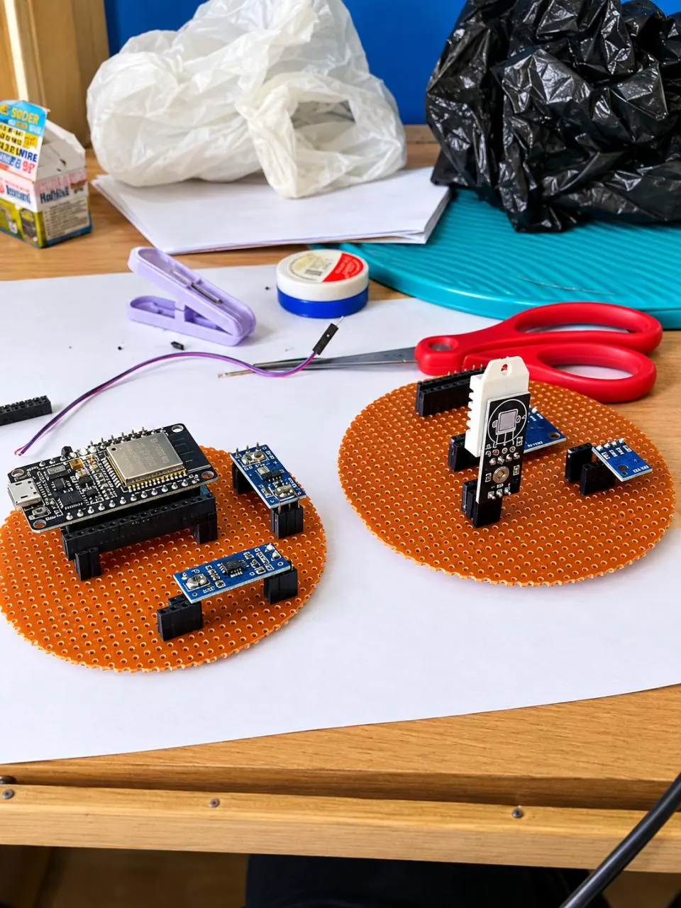
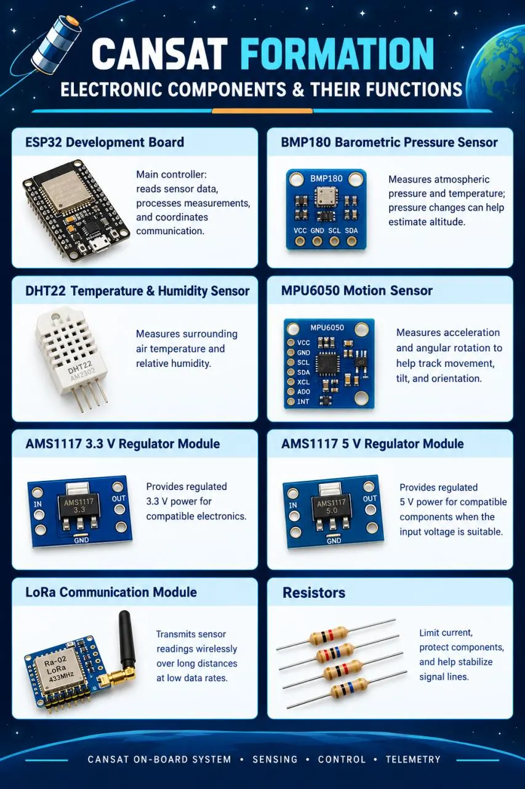
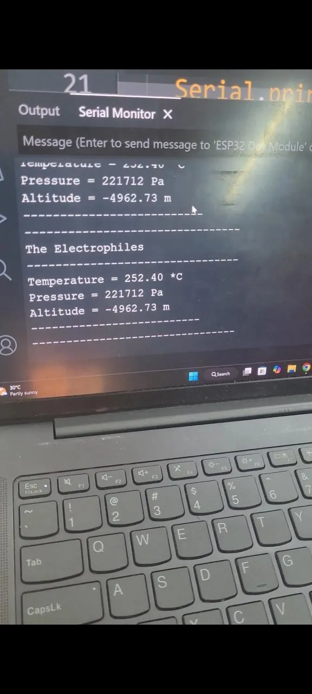
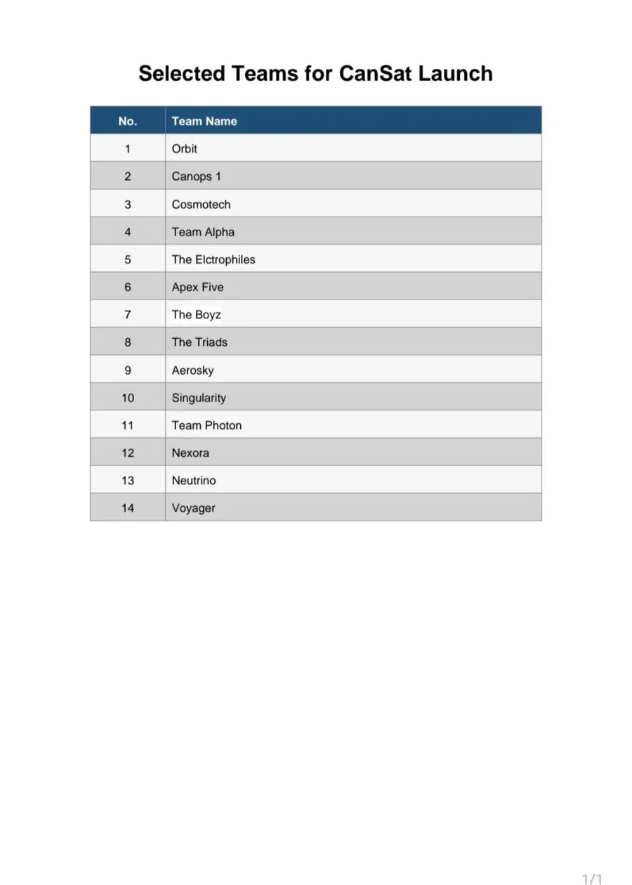
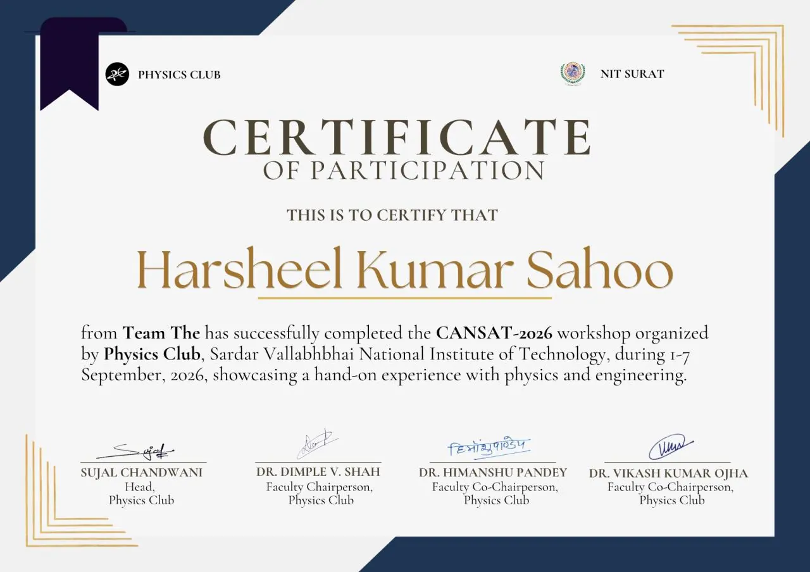

← All projects
Project · Sep - Oct 2026
CanSat Design and Development
A can-sized satellite designed, built, and tested by our team, The Electrophiles, in the CanSat-2026 programme organized by the Physics Club at SVNIT.

Overview
I designed and developed a CanSat as part of a team project organized by the Physics Club, SVNIT. Our team qualified for the final round of the competition.
- Contributed to the design, development, and testing of the CanSat.
- Gained hands-on experience in engineering design, system integration, and experimental testing.
- Took part in iterative testing and learned from the challenges that came up during the test phase.
The team was one of 14 selected for the CanSat launch.
Hardware
On-board electronics
ESP32 development boardMain controller: reads sensor data, processes measurements, and coordinates communication.
BMP180 pressure sensorMeasures atmospheric pressure and temperature; pressure changes help estimate altitude.
DHT22 sensorMeasures air temperature and relative humidity.
MPU6050 motion sensorMeasures acceleration and angular rotation to track movement, tilt, and orientation.
AMS1117 regulators (3.3 V and 5 V)Provide regulated power for the electronics.
LoRa module (Ra-02, 433 MHz)Transmits sensor readings wirelessly over long distances at low data rates.
Process
Gallery





Outcome: the CanSat did not survive the final test flight, but the project taught us a great deal about identifying engineering challenges, evaluating system performance, and the importance of testing and reliability in aerospace systems.